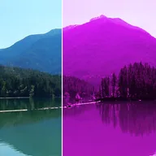

カラーライズ

レイヤー全体を1つの色相で着色します。「明暗」はレイヤーの明るさを色相に割り当て、「明るさを保持」は各ピクセルの明るさを保ったまま色相の色に置き換えます。
設定
| 設定項目 | 種類 | 範囲 | デフォルト |
|---|---|---|---|
| 色相 | 角度 | 0°〜360° | 0° |
| 量 | 数値 | 0%〜100% | 50% |
| スタイル | 選択 | 明暗、明るさを保持 | 明暗 |

レイヤー全体を1つの色相で着色します。「明暗」はレイヤーの明るさを色相に割り当て、「明るさを保持」は各ピクセルの明るさを保ったまま色相の色に置き換えます。
| 設定項目 | 種類 | 範囲 | デフォルト |
|---|---|---|---|
| 色相 | 角度 | 0°〜360° | 0° |
| 量 | 数値 | 0%〜100% | 50% |
| スタイル | 選択 | 明暗、明るさを保持 | 明暗 |